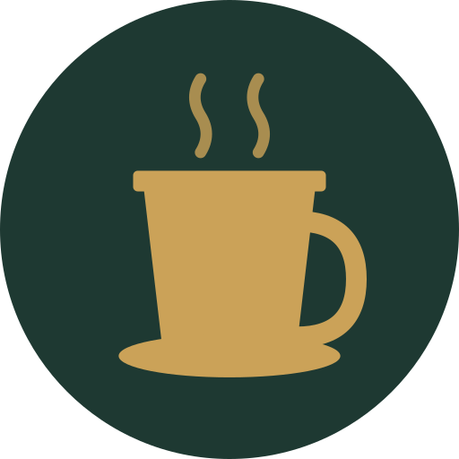
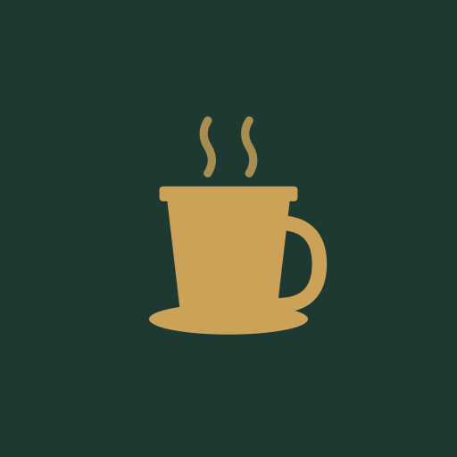
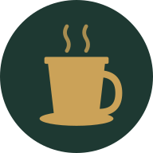

Track your Starbucks location cup collection — self-hosted, map-first, real-time sync.
Icon glyph
Custom SVG cup graphic — gold mug with steam on Deep Forest background. The ☕ emoji is used as a placeholder in design mockups where the SVG is unavailable.
App header style
Cup Collector — white on deep forest (#1E3932), system font bold. No emoji in the app header.
Docs topbar style
☕ Cup Collector — gold (#CBA258) on deep forest (#1E3932), DM Sans SemiBold
Category
Fan-made personal-use app; no Starbucks affiliation or trademark usage
Voice and tone
Friendly and direct. Skip the corporate language. "Tap a pin to see the cup" beats "Interact with a map marker to view product details."
Collector-aware. Readers know what series, variant, region, and You Are Here vs. Been There mean — no need to over-explain.
Action-oriented. Titles name what you do (Using While Traveling, Adding Cups), not what things are.
Not a Starbucks brand. Avoid green sirens, official logos, registered marks, or anything that implies an official relationship.
Color Palette
Five primary colors carry the brand. The remaining colors are semantic or structural — use them for their stated purpose rather than as general design choices.
Primary palette
Deep Forest
#1E3932
Nav bar, page headers, PWA theme color, step number circles. The primary brand color.
Starbucks Green
#00704A
Primary accent, interactive elements, "owned" map pins, callout borders, links on dark surfaces.
Mid Green
#2D5A3D
Nav border-top, structural separators within green surfaces.
Gold
#CBA258
Brand highlight. Active nav item, wordmark text on dark, step numbers on green-dark, tip callout borders.
Cream
#FAF7F2
Page background, light surface, card fill. The warm neutral base of every screen.
Support colors
Gold Light
#F5EDD8
Tip callout background, warm badge fill. Docs site only.
Green Light
#E8F2EE
Info callout background, highlight spans in prose. Docs site only.
Amber
#E8833A
Warning callout border. Docs site only.
Near Black
#0F1A14
Heading text, label text, strong emphasis. Docs site only.
Dark Gray
#2C2C2C
Body copy, list items. Docs site only.
Warm Gray
#6B6457
Captions, secondary labels, muted metadata. Docs site only.
Border
#D8D0C4
Card borders, table borders, section rules. Docs site only.
White
#FFFFFF
Card backgrounds, table cells, modal surfaces.
Map and status colors
These colors carry specific meaning in the app's map view and should not be repurposed in other contexts.
Owned #00704A
Cup is in the household's collection
Not owned #F97316
Cup is in the catalog but not collected
Nearby Starbucks #3B82F6
Starbucks store pin on the map
You are here #FFFFFF / #1D4ED8
User's current GPS location — white fill, blue ring
Typography
Docs site and design materials — not the app
The three typefaces below are used in the docs site and Canva design work. The app itself uses only the system font stack (see App fonts below) — no web fonts are loaded by the PWA.
Canva note
All three typefaces are available in Canva's font library. Search by exact name. For Google Slides or Docs, use Google Fonts — all three are in the Google Fonts catalog.
Bitter — display headings
Bitter · Serif · Google Fonts
Cup Collector
You Are Here · Been There · Campus Collection
Bold — page titles, section heads, doc titles
DM Sans — body and UI text
DM Sans · Sans-serif · Google Fonts
Track your collection across every trip.
Cup Collector shows which cups you own on an interactive map and finds nearby Starbucks when you're traveling — so you always know whether that cup on the shelf is one you need.
Regular — body copy
SemiBold — labels, card titles, UI text
IBM Plex Mono — code and metadata
IBM Plex Mono · Monospace · Google Fonts
REFERENCE · v0.1.0 · #1E3932
Regular — code, hex values, eyebrow labels
Medium — code emphasis
App (PWA) — system fonts
The installed PWA uses the system font stack, not web fonts. This keeps the app fast and native-feeling on every platform. Do not add custom web fonts to the app.
This resolves to SF Pro on Apple devices and Roboto on Android — both render cleanly at the sizes the app uses.
App Icon & PWA Assets
Icon design
The app icon uses a custom SVG cup graphic — a gold mug with steam on a Deep Forest (#1E3932) background. The installed icon always appears as a squircle: iOS clips the apple-touch-icon to its squircle shape; Android applies its own adaptive mask to the maskable icon.

icon-512.png 512 × 512 px

icon-512-maskable.png 512 × 512 px

icon-192.png 192 × 192 px
apple-touch-icon.png 180 × 180 px · iOS
favicon.ico 32 × 32 px
Asset
File
Size
Notes
PWA icon (large)
icon-512.png
512 × 512 px
Circular PNG — same design as icon-192 at higher resolution
Maskable icon
icon-512-maskable.png
512 × 512 px
Square full-bleed — Android applies adaptive shape mask; safe zone is center 80%
PWA icon
icon-192.png
192 × 192 px
Circular PNG with transparent corners — fallback for browsers that don't use the maskable icon
Apple touch icon
apple-touch-icon.png
180 × 180 px
Square full-bleed — iOS clips to squircle on the home screen; no padding needed
Favicon
favicon.ico
32 × 32 px
Browser tab icon
Splash screens
splash-WxH.png
Various
Solid Deep Forest background, no graphic; covers 15 iPhone and iPad sizes
Splash screen background
All splash screens are a solid #1E3932 (Deep Forest) fill — no graphic or wordmark. Any replacement assets must maintain this background to avoid a white flash during app launch on iOS.
Imagery
What fits
Cups close-up. Straight-on or slight 3/4 angle, good natural light, cup fills the frame. The location text on the cup should be legible.
Travel moments. Airports, cityscapes, Starbucks storefronts seen while traveling — not staged product shots.
Maps and pins. App screenshots, map views, and UI illustrations that reinforce the "find it on the map" concept.
Warm, earthy palettes. Images that lean into cream, green, and brown tones work naturally with the brand colors.
What to avoid
Official Starbucks siren logo, registered trademarks, or any imagery that implies an official affiliation.
Fluorescent lighting or harsh shadows — cups look flat and unappetizing.
Busy backgrounds that compete with the cup's location text.
Non-location cups (tumblers, mugs without location names) — the app is specifically for the You Are Here, Been There, and location-specific series.
Stock photos of generic coffee — they read as café branding, not collector branding.
Color treatment in images
When placing images alongside brand colors, prefer photos with naturally dark or muted backgrounds so the cream and green palette doesn't fight with the image. A subtle dark vignette or color overlay using Deep Forest at 20–30% opacity can tie photos into the palette when needed.
Canva Setup Guide
Brand kit — colors
Add these colors to your Canva Brand Kit under Brand colors. Name them exactly as listed so teammates can find them by name.
Canva name
Hex
Role
Deep Forest
#1E3932
Primary — headers, nav, backgrounds
Starbucks Green
#00704A
Primary accent — buttons, links, icons
Gold
#CBA258
Highlight — active states, wordmark
Cream
#FAF7F2
Background — light page surfaces
Mid Green
#2D5A3D
Structural — borders within green areas
Gold Light
#F5EDD8
Fill — tip/callout backgrounds
Green Light
#E8F2EE
Fill — info/owned-state tints
Warm Gray
#6B6457
Text — captions, secondary labels
Near Black
#0F1A14
Text — headings, primary copy
Map Orange
#F97316
Status — map pin (not owned)
Map Blue
#3B82F6
Status — nearby Starbucks store pin
Map Blue Dark
#1D4ED8
Status — "you are here" ring / store pin border
Brand kit — fonts
These fonts match the docs site's visual identity. The app itself uses the system font stack — do not add these as web fonts to the app.
Step 1 — Heading font
In Canva Brand Kit → Brand fonts, set Heading to Bitter, weight Bold (700). Canva has Bitter in its library — search by name.
Step 2 — Body font
Set Body to DM Sans, weight Regular (400). Use SemiBold (600) for labels and card titles via the font weight picker.
Step 3 — Accent / mono font
Add a third slot (if your Canva plan allows) for IBM Plex Mono at Regular (400). Use this for hex codes, version strings, eyebrow labels, and any code-like text in designs.
Step 4 — Logo
The "logo" is a text treatment: ☕ Cup Collector in DM Sans SemiBold, color Gold (#CBA258), on a Deep Forest (#1E3932) rectangle. Add this as a Brand Kit logo element or as a saved group. No SVG asset exists.
Recommended Canva template layout
For social posts, slide decks, or announcement graphics:
Header band: Deep Forest background, Gold wordmark text (DM Sans SemiBold), ☕ glyph left-aligned.
Body area: Cream background, Near Black headings (Bitter Bold), Dark Gray body copy (DM Sans Regular).
Accent elements: Starbucks Green for button shapes, Gold for icons or highlights, Green Light for soft background panels.
Footer: Warm Gray text, Cream or White background, 1 px Border rule at the top.